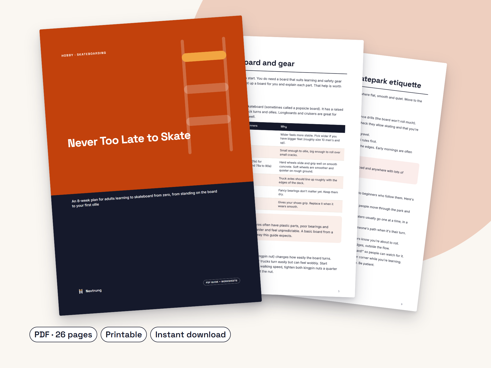

Never Too Late to Skate
An 8-week plan for adults learning to skateboard from zero, from standing on the board to your first ollie
Made for: Adults (18–35) learning to skateboard from zero.
What's inside
- 8-week skate plan in four two-week stages
- Board and safety gear guide for beginners
- Falling-safely drills to practise before you ride
- Skatepark etiquette and where to skate as a beginner
- Step-by-step drills for pushing, carving, stopping, kick turns and tic-tacs
- Ollie breakdown with fixes for common problems
- 6-minute warm-up and tips for staying unstuck
- Printable trackers: 8-week progress, session log, ollie tracker, fear ladder
- Instant PDF download, A4, print or use on your phone
Look inside


Want to learn to skate but think you've left it too late? You haven't. Never Too Late to Skate is a calm, step-by-step plan for adults starting from zero.
It runs for 8 weeks in four stages: stand and roll, push and stop, turn and ride ramps, and the ollie. Each stage has clear drills, checklists that tell you when you're ready to move on, and tips for common problems. You'll also learn how to choose a board and gear, how to fall safely, and how to fit in at the skatepark.
Written in plain language for adults who want a clear plan, not a hype video. Printable trackers and a session log help you see your progress, even on the days it doesn't feel like much.
Questions
I've never stood on a skateboard. Is this for me?
Yes. It starts with standing on the board on grass and builds up from there. Every stage has a checklist so you know when you're ready to move on.
Will I definitely be able to ollie after 8 weeks?
No one can promise that. Everyone learns at a different pace. The plan gives you a clear path to the ollie, and it's fine if some stages take you longer.
What gear do I need?
A standard skateboard, a helmet, wrist guards, knee pads and flat shoes. Elbow pads are recommended. The guide explains what to look for.
Is it medical advice?
No. It's general information. Skateboarding has a risk of injury. Check with a doctor or physio first if you have a health condition or injury.
How do I get it?
It's an instant PDF download after purchase. Print it or keep it on your phone.
Please note: General information only, not medical or legal advice. Skateboarding carries a risk of injury. Always wear a helmet and protective gear, skate within your ability and follow local council and skatepark rules. Rules about skating in public places vary by state and territory, so check official sources where you live. Check with a doctor or physiotherapist before starting if you have a health condition or injury. This guide was drafted with the help of AI writing tools, then edited and designed by Nextrung.